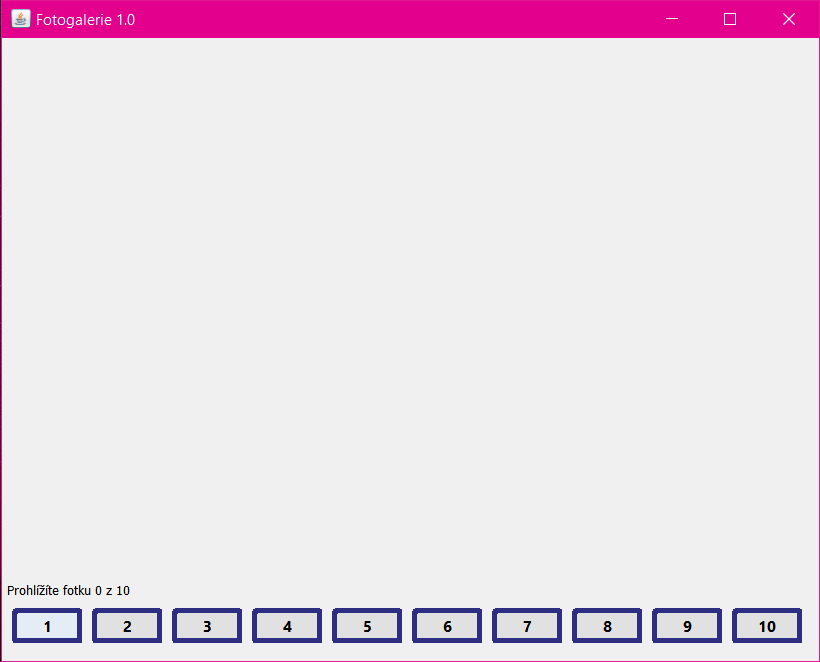
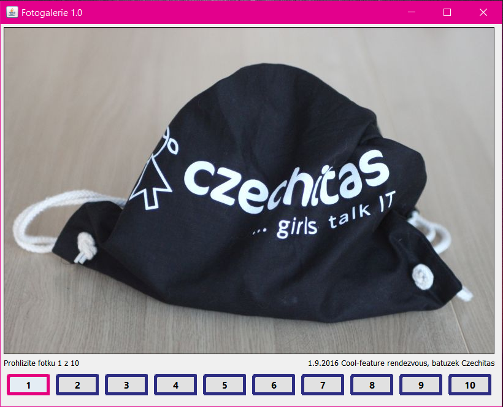

Domácí úkol - Fotogalerie 1.0
Vytvořte si nový projekt pro domácí úkol - fotogalerii.
V JFormDesigneru vytvořte JLabely pro počítání pořadí fotek, popisek fotky a nakonec pro 10 fotek (pro každou svůj). Dále 10 tlačítek pro přepínání mezi fotkami.
Vypadat by to mohlo takto nějak:
Jak to funguje se můžete podívat tady:
A DEMO stahujte a zkoušejte odtud: demo
Tohle by se vám mohlo hodit ;-) :
btnFotka1.setBorder(new LineBorder(new Color(45, 45, 130), 5, true));
btnFotka1.setBorder(new LineBorder(new Color(229, 0, 125), 5, true));
Pokud budete mít s úkolem jakýkoliv problém, využjte naši
facebookovou skupinu,
kde vám rádi poradíme.
Raději se 10x zeptejte, než abyste to vzdaly!